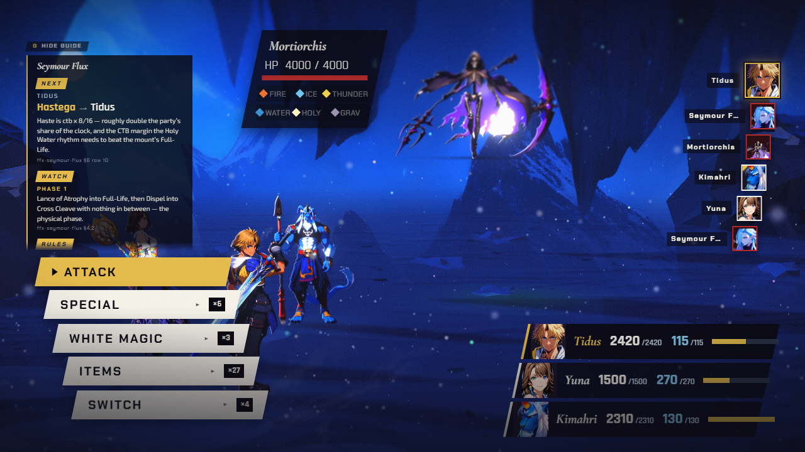
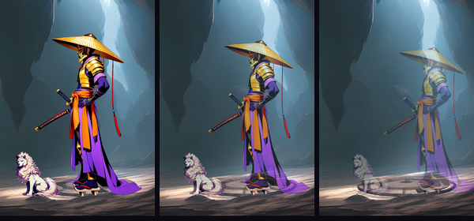
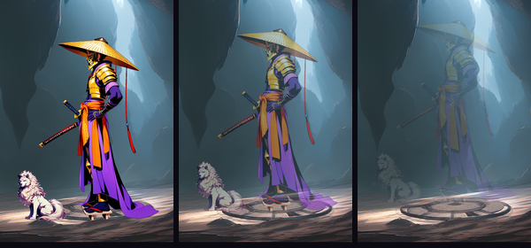
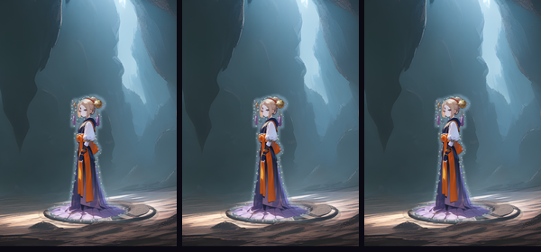
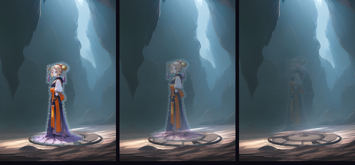
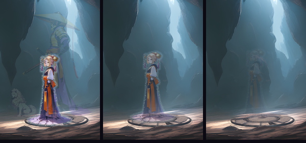

An aeon, a dream of the fayth, not a person. Daigoro is a fayth too, and he leaves when Yojimbo does.

The global default for Yojimbo (real capture, same code path, another enemy). Daigoro is a non-combatant with no KO, so he just stays.
“true to both games — for fiends and unsent” presentation.md §3.3

Dims and steps back (D-035). That kind is for living people who lose and walk off.
“They lose and the scene continues.” §3.1, living humans
“He dies and leaves a body.” row 142, Seymour only

The idle dims and rises away with the dog, like Anima's recall at Macalania, with no pyrefly burst. This is the aeon-class reading. No source describes Yojimbo's own exit.
“present the departure as a recall, not a death” row 141, Anima
An unsent summoner, never targetable (D-051). She is not beaten in the fight; Yuna sends her afterwards.

She is a non-combatant with no KO (yojimbo-rules.ts, read from the code). The placeholder post scene has only the results, so her story never ends.

She would break into pyreflies with Yojimbo's defeat. That takes the sending, the payoff of Lulu's scene, away from Yuna.

She is still standing when Yojimbo is recalled. After the battle, Yuna's sending holds this time, and Ginnem breaks up into pyreflies (a story beat, not the presenter). This is the draft's beat 5 (docs/plans/yojimbo-story-draft.md), which is waiting for your read.
“After the battle, Yuna sends Ginnem to the Farplane.” FF Wiki Ginnem, revid 3963153
“When an unsent is sent … the body disperses into pyreflies.” presentation.md row 131